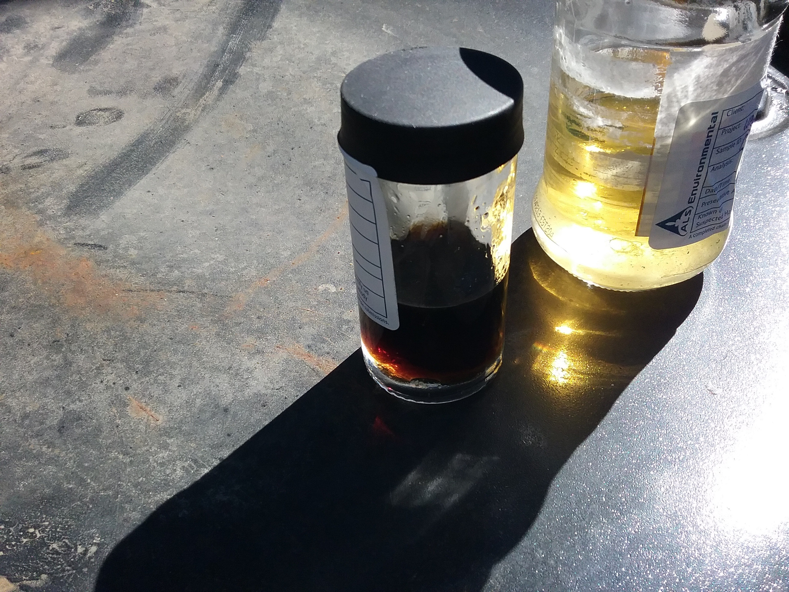
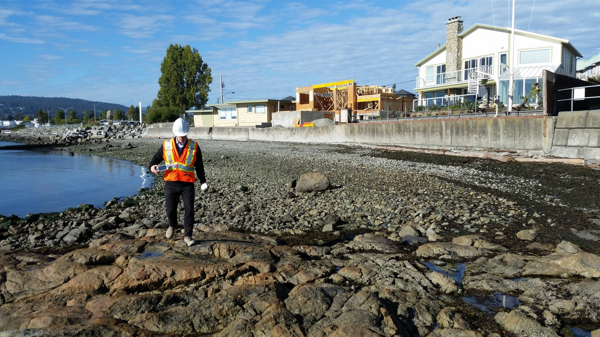

Gandalf's Services

Gandalf works with a broad range of clients in sectors including petroleum sales, industrial and manufacturing, real estate acquisitions and development, legal support, financial services, upstream oil and gas, First Nations, and government.
Established in 2000, Gandalf provides services across British Columbia.
Finding innovative, cost-effective solutions to complex environmental issues.
Phase 1 Environmental Site Assessments and Stage 1 Preliminary Site Investigations
Gandalf routinely conducts these evaluations to determine the types and locations of potential contaminants and their pathways and receptors. This includes a records review, site visits, and interviews and are generally used to support real estate transactions, bank financing and development permits.
Phase 2 & 3 Environmental Site Assessments, Stage 2 Preliminary Site Investigations, and Detailed Site Investigations
If a Phase 1 or Stage 1 identifies evidence of environmental or human health issues, then intrusive investigations may be conducted to investigate actual site conditions. This will involve field investigation including the sampling and laboratory analysis of soil, groundwater, sediment, and/or soil vapour samples, usually involving the mobilization of specialized environmental contractors.
Contaminant Hydrogeology
If the above investigations identify potential or actual groundwater impacts, Gandalf can assess the potential movement of contaminants in groundwater to evaluate their likely fate and transport.

Remediation and Risk Management
Gandalf can review site conditions, regulatory requirements, and current/proposed land use to determine which remedial options should be considered based on long-term effectiveness, reduction of toxicity, impacts to the environment or future operations, liability, and costs. Gandalf develops tender specifications for remedial contractors and oversees the implementation of remedial activities.
Risk Assessment
Risk assessment involves documenting that the extent of contamination is known and is not likely to pose unacceptable human health or ecological risks. Gandalf conducts preliminary or screening level risk assessments in-house and, if a quantitative or detailed risk assessment is required, works with a suitably qualified professional.